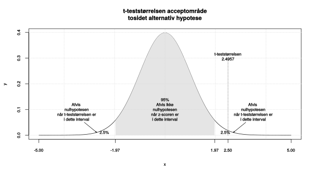
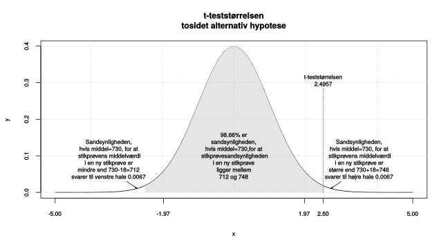
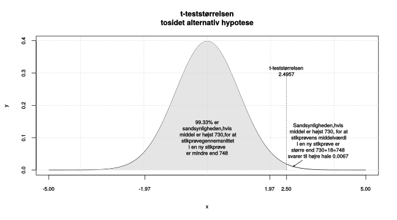
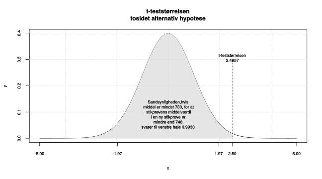
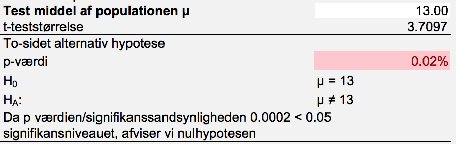
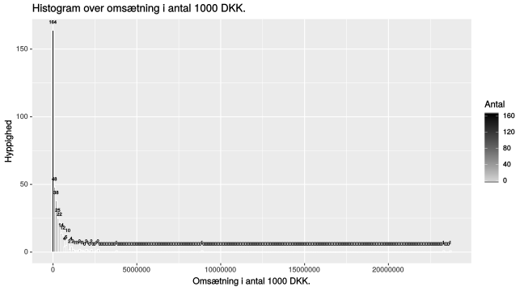

Kapitel 6 Hypotesetests middelværdi
6.1 Hypotesetest tosidet alternativ hypotese
Vi kan ud fra en stikprøve udtale os om, hvad den sande middelværdi \(\mu\) i populationen er. I eksemplet med mægleren tidligere, var den gennemsnitlige afstand til nærmeste filial 748 meter, standardafvigelsen 102 meter og stikprøvestørrelsen 200.
Mægleren mener, den sande afstand til nærmeste filial i gennemsnit er 730 meter. Kan dette være korrekt? Hypotesen bliver:
\[H_0:\mu = 730\] \[H_1:\mu \neq 730\]
Påstanden i nulhypotesen \(H_0\) er vores udgangspunkt, noget vi på forhånd mener er korrekt. Der skal en del til at vi forkaster nulhypotesen og dermed konkluderer at udsagnet i alternativ hypotesen \(H_1\) eller \(H_a\) er korrekt. Alternativ hypotesen \(H_1\) er altid det komplementære udsagn til nulhypotesen, dvs. når nulhypotesen er \(=\) bliver alternativ hypotesen \(\neq\).
6.1.0.1 Signifikansniveau
Signifikansniveauet \(\alpha\) angiver sandsynligheden for at forkaste en sand nulhypotese, ofte sættes dette til 5%. Det betyder at i 1 ud af 20 tilfælde, vil vi komme til at forkaste nulhypotesen, til trods for at denne var sand. Vi udtager stikprøver simpelt tilfældigt fra populationen, enkelte af disse vil give et forkert billede af virkeligheden. Ønsker man yderligere sikkerhed, for ikke at forkaste en sand nulhypotese, kan man sætte signifikansniveauet til 1%, så vil man kun i 1 ud af 100 tilfælde forkaste en korrekt nulhypotese.
I medicinalindustrien bruger man typisk 1% signifikansniveu for at sikre at et produkt har en effekt. Hypoteserne ville da være. \[H_0\ produktet\ har\ ingen\ effekt\] \[H_1\ produktet\ har\ effekt\] Man ville således kun i 1 ud af 100 tilfælde fejlagtigt konkludere at et produkt har effekt. Signifikansniveauet \(\alpha\), betegner sandsynligheden for at begå en type 1 fejl. En type 1 fejl, er alså sandsynligheden for at forkaste en nulhypotese der er sand.
Konfidensniveauet angiver sandsynligheden for at ikke forkaste en sand nulhypotese, summen af konfidensniveau og signifikansniveau er således 100%. 5% signifikansniveau svarer til 95% konfidensniveau, 1% signifikansniveau svarer til 99% konfidensniveau. De gængse signifikansniveauer er 1%, 5% og 10%. Er intet angivet, tester vi på 5% signifikansniveu, man beslutter sig inden testet for hvilket signifikansniveau man sætter.
6.1.0.2 Teststørrelse
Vi kalder hypoteseværdien \(\mu_0=730\), vores teststørrelse bliver:
\[\frac{\hat{\mu}-\mu_0}{SEM}=\frac{748-730}{\frac{\hat{\sigma}}{\sqrt{n}}}=\frac{18}{\frac{102}{\sqrt{200}}}=\frac{18}{7.2125}=2.4957\]
Hvor vi fra stikprøven, har gennemsnittet \(\hat{\mu}\) 748 meter, standardafvigelsen i stikprøven \(\hat{\sigma}\) 102 meter og stikprøvestørrelsen 200. Teststørrelser er et centralt begreb i hypotesetests, tælleren 748-730, er et mål for hvor stor forskellen er mellem det vi har observeret i stikprøven 748, og den værdi vi antager under nulhypotesen 730. Der gælder for alle typer af tests at store teststørrelser er kritiske for nulhypotesen. Store teststørelser betyder vi ikke tror på nulhypotesen. I dette tilfælde er nulhypotesen, at afstanden til nærmeste filial er 730 meter. Hvornår er en teststørrelse så stor? Det afhænger af testtypen og stikprøvestørrelsen. Her er der tale om en tosidet (da alternativ hypotesen er \(\neq\)) t-test, det betyder at numerisk store teststørrelser er kritiske. Havde vi fx observeret afstanden til nærmeste filial var 700 meter, var tælleren 700-730 blevet negativ, da nævneren altid er positiv ville teststørrelsen blive negativ. Var afstanden kun 700 meter i stikprøven, ville vi ikke tro på at afstanden i populationen er 730 meter. Når vi tester tosidet er meget negative eller positive teststørrelser kritiske for nulhypotesen, dvs. når teststørrelsen numerisk bliver stor, tror vi ikke på nulhypotesen. Da vi ser på en t-test afhænger fraktilerne af antallet af frihedsgrader og signifikansniveauet, når vi har en stor stikprøve på 5% signifikansniveau, vil værdier mindre end -1.96 eller større end 1.96 være kritiske for nulhypotsen. Her er stikprøvestørrelsen 200, dvs. vi benytter t-fordelingen med 199 frihedsgrader, hvilket gør at de kritiske værdier bliver -1.97 og 1.97. I teststørrelsen dividerer vi med standardfejlen SEM, dette er for at skalere teststørrelsen korrekt, så den altid er i en skala, der svarer til t-fordelingen. Havde vi fx målt afstanden til nærmeste filial i centimeter, ville tælleren blive 74800-73000=1800, vi korrigerer for skala ved at dividere med SEM, skalerer vi så teststørrelsen bliver den samme uanset om vi måler i meter eller centimeter.
6.1.0.3 Signifikanssandsynlighed p-værdi
Signifikanssandsynligheden også kaldet p-værdien, angiver sandsynligheden for at få en mere ekstrem teststørrelse, hvis vi udtager en ny tilsvarende stikprøve, når nulhypotesen er sand. I mægler eksemplet er p-værdien lille 0.0134, der kun 1.34% chance for at få en teststørrelse der numerisk er større end 2.4957, hvis vi udtog en ny stikprøve på 200, hvis nulhypotesen er sand. Da 1.34% er mindre end 5%, tror vi ikke på nulhypotesen om at der gennemsnitligt er 730 meter til nærmeste filial.Vi beregner p-værdien ved arealet af halen, der skæres af ved teststørrelsen eller teststørrelsen numerisk. Arealet ved højre hale, der skæres af 2.4957 er 0.0067, arealet ved venstre hale, der skæres af -2.4957 er ligeledes 0.0067. Når vi tester 2-sidet lægger vi begge halearealer sammen og får 0.0067+0.0067=0.0134, hvilket er p-værdien.
Nedenstående figurer viser p-værdi på 0.0134. Vi forkaster altså nulhypotesen på 5% signifikansniveauet.
Den sande afstand til nærmeste filial, er altså forskellig fra 730 meter. Afstanden er større end 730 meter kan vi af konstatere da p-værdien 0.0067 er mindre end signifikansniveauet.


Hvis vi ser på teststørrelser i stedet for afstanden i meter, har vi beregnet denne til 2.4957 svarende til de 748 meter, da alternativhypotesen er forskellig fra, skal vi se på både venstre og højre hale. Vi skal beregne sandsynligheden (p-værdien) for at få en mere ekstrem teststørrelse, det betyder her en teststørrelse mindre end -2.4957 og større end 2.4957, når nulhypotesen om at afstanden er 730 meter er sand. At teststørrelsen er mindre end -2.4957, svarer oversat til meter at afstanden er mindre end 712 meter, sandsynligheden for en numerisk mere ekstrem teststørrelse bliver arealet af begge haler 0.0067+0.0067=0.0134.
Vi kan benytte fanen 1 kvantitativ stikprøve beregnede data i venstre side. Her skal vi benytte testen med to-sidet alternativ hypotese.

Vi siger ovenstående konklusion er niveaufølsom, vi ville ikke have forkastet på 1% signifikansniveau, da 1% er mindre end p-værdien på 1.34%. At konklusionen er niveaufølsom, betyder altså at forskellige signifikansniveaer giver forskellige konklusioner.
Hvis vi kender populationens standardafvigelse \(\sigma\), eller vi har store stikprøver, kan vi benytte z-fordelingen, til beregning af signifikanssandsynligheder. Software benytter ofte konsekvent t-fordelingen, der approximerer z-fordelingen, når antallet af frihedsgrader vokser. Jo større stikprøven er jo mindre forskel vil der være mellem de to metoder. Vi kan for små stikprøver benytte t-fordelingen, hvis stikprøven stammer fra en normalfordelt population. I Freestat benyttes kun t-fordelingen da vi forudsætter at populationsvariansen er ukendt.
6.2 Tosidet alternativ hypotese og konfidensintervallet.
Når vi tester med tosidet alternativ hypotese, kan vi bruge konfidensintervallet svarende til signifikansniveauet til at afgøre om en nulhypotese forkastes. Ligger parameter estimatet \(\hat\mu\) indenfor konfidensintervallets nedre og øvre grænse, kan vi ikke forkaste nulhypotesen, ligger det udenfor forkaster vi nulhypotesen. Denne metode er dog ikke så præcis som testet, hvor vi finder størrelsen af p-værdien. Ud fra størrelsen af p-værdien, kan vi afgøre hvor sikker hvor konklusion er.
6.3 Ensidet alternativ hypotese
Ovenfor undersøgte vi om den sande afstand til nærmeste filial i gennemsnit er 730 meter mod alternativ hypotesen den sande afstand til nærmeste filial i gennemsnit er forskellig fra 730 meter. Vi kunne fx. være interesseret i:
- Afstanden til nærmeste filial er mindst 730 meter mod alternativ hypotesen at afstanden til nærmeste filial er mindre end 730 meter.
- Afstanden til nærmeste filial er højst 730 meter mod alternativ hypotesen at afstanden til nærmeste filial er større end 730 meter.
I formuleringen af spørgsmålet der stilles ligger nøglen til hvilken type test vi bruger, nedenfor er et skema over de ord man oplever i en formuleringen af et spørgsmål, disse skal benyttes til at afgøre om det er den ene eller anden hypotese vi skal benytte. Bemærk når man opstiller en konkret hypotese vil \(\mu_0\) blive skiftet ud med den mulige middelværdi i populationen man ønsker at teste:
| Ord | Operator | Hypotese | Passer med |
|---|---|---|---|
| Er, kan være, | \(=\) | \(H_0:\mu=\mu_0\) | \(H_1:\mu\neq\mu_0\) |
| Er ikke, er forskellig fra | \(\neq\) | \(H_1:\mu\neq\mu_0\) | \(H_0:\mu=\mu_0\) |
| Højst | \(\leq\) | \(H_0:\mu\leq\mu_0\) | \(H_1:\mu>\mu_0\) |
| Større end | \(>\) | \(H_1:\mu>\mu_0\) | \(H_0:\mu\leq\mu_0\) |
| Mindst | \(\geq\) | \(H_0:\mu\geq\mu_0\) | \(H_1:\mu<\mu_0\) |
| Mindre end | \(<\) | \(H_1:\mu<\mu_0\) | \(H_0:\mu\geq\mu_0\) |
6.3.1 Ensidet alternativ hypotese opad
Vi kan eksempelvis spørge på følgende måder og komme til samme konklusion:
- Afstanden til nærmeste filial er højst 730 meter
- Afstanden til nærmeste filial er større end 730 meter I 1. får vi givet nulhypotesen da lighedstegnet ALTID skal i nulhypotesen, alternativhypotesen følger som det komplementære udsagn. I 2. får vi givet alternativ hypotesen da udsagnet ikke indeholder lig med, nulhypotesen følger som det komplementære udsagn.
\[H_0:\mu \leq 730\] \[H_1:\mu > 730\]
Hvilket betyder vi skal benytte den 2. af de 3 testmuligheder i Freestat output, dvs. signifikanssandsynligheden bliver 0.67%, vi forkaster altså nulhypotesen. Vi konkluderer derfor at \(\mu > 730\). Den gennemsnitlige afstand til nærmeste filial i populationen er altså større end 730 meter. p-værdien er illustreret i figuren nedenfor, som den hvide højre hale.
Hvis vi her ser på teststørrelser i stedet for afstanden i meter, har vi beregnet denne til 2.4957 svarende til de 748 meter, da alternativhypotesen er større end, skal vi se på højre hale. Vi skal beregne sandsynligheden (p-værdien) for at få en mere ekstrem teststørrelse, det betyder her en teststørrelse større end 2.4957, når nulhypotesen om at afstanden er 730 meter er sand. At teststørrelsen er større end 2.4957, svarer oversat til meter, til at afstanden er større end end 748 meter, sandsynligheden for en mere ekstrem teststørrelse bliver arealet højre hale 0.0067 altså p-værdien.

6.3.2 Ensidet alternativ hypotese nedad
Vi viser her testet for ensidet alternativ hypotese nedad. Der er ingen grund til at teste her, vi ved der skal meget til at forkaste nulhypotesen, og vi har et stikprøvegennemsnit, der er større end 730. Vi vil derfor helt sikkert finde, at nulhypotesen om at afstanden til nærmeste filial er mindst 730 meter, ikke kan forkastes. Vi viser alligevel eksemplet med samme værdier, for at man kan se hvorledes sammenhængen er mellem de 3 typer af tests.
- Afstanden til nærmeste filial er mindst 730 meter
- Afstanden til nærmeste filial er mindre end 730 meter I 1 får vi givet nulhypotesen, da lighedstegnet ALTID skal i nulhypotesen, alternativhypotesen følger som det komplementære udsagn. I 2 får vi givet alternativ hypotesen, da udsagnet ikke indeholder lig med, nulhypotesen følger som det komplementære udsagn.
\[H_0:\mu \geq 730\] \[H_1:\mu < 730\]
Hvilket betyder vi skal benytte den 3. af de 3 testmuligheder i Freestat output, dvs. signifikanssandsynligheden bliver 99.33%, vi forkaster altså IKKE nulhypotesen. Vi konkluderer derfor at \(\mu \geq 730\). Den gennemsnitlige afstand til nærmeste filial i populationen er altså mindst 730 meter. p-værdien er illustreret i figuren nedenfor, som den store grå venstre hale.
Hvis vi ser på teststørrelsen har vi beregnet denne til 2.4957, da alternativhypotesen er mindre end, skal vi se på venstre hale. Vi skal beregne sandsynligheden (p-værdien) for at få en mere ekstrem teststørrelse, det betyder her en teststørrelse mindre end 2.4957, når nulhypotesen om at afstanden er mindst 730 meter er sand. At teststørrelsen er mindre end 2.4957, svarer oversat til meter at afstanden er mindre end 748 meter, sandsynligheden for dette er meget høj nemlig 99.33%. Dette svarer til den grå venstre hale, vi er altså meget langt fra 5% signifikansniveauet og forkaster ikke nulhypotesen.

6.3.3 Eksempel
6.3.3.1 Statistik karakterer
I datasættet Statkarakterer  findes 54 statistik 2015 finansøkonom karakterer. Man kan med rette diskutere om karakterer for specifikke klasser/undervisere/lokationer etc. er repræsentative for populationen.
Her antager vi at stikprøven er respræsentativ. Det er ligeledes tvivlsomt om vi kan behandle karakterer som en kontinuert variabel, der er tale om en kvalitativ ordinal variabel. I uddannelsesmæssige sammenhænge behandles karakterer som en kontinuert variabel, der beregnes gennemsnit og standardafvigelser, derfor forudsætter vi her variablen er kontinuert.
findes 54 statistik 2015 finansøkonom karakterer. Man kan med rette diskutere om karakterer for specifikke klasser/undervisere/lokationer etc. er repræsentative for populationen.
Her antager vi at stikprøven er respræsentativ. Det er ligeledes tvivlsomt om vi kan behandle karakterer som en kontinuert variabel, der er tale om en kvalitativ ordinal variabel. I uddannelsesmæssige sammenhænge behandles karakterer som en kontinuert variabel, der beregnes gennemsnit og standardafvigelser, derfor forudsætter vi her variablen er kontinuert.
Vi finder parameterestimatet ved stikprøvegennemsnittet som \(\hat{\mu}=4.65\)
Vi ønsker nu at undersøge om gennemsnittet i populationen, kan antages at ligge præcis mellem 4 og 7 dvs. 5.5. Det betyder vores \(\mu_0=5.5\). Hypoteserne bliver:
\[H_0: \mu = 5.5\] \[H_1: \mu \neq 5.5\]
Standard fejlen SE for middelværdien er 0.63, . Det betyder teststørrelsen bliver -1.34. Vi kan nu bestemme p-værdien, arealet af de 2 haler i t-fordelingen med 53 frihedsgrader. bliver 0.1844, da teststørrelsen er større end 5%, kan vi altså ikke forkaste nulhypotesen.
Vi konkluderer altså gennemsnittet i populationen, kan antages at være 5.5.
6.4 Standardafvigelse test
6.4.0.1 FPC endelig populations korrektion og z-test
6.4.0.2 Type 1 og type 2 fejl
Hvis man forkaster en sand nulhypotese, kaldes det en type 1 fejl, det betyder nulhyposen er sand, men vi forkaster fejlagtigt nulhypotesen, dette kaldes en falsk positiv. Man kan tænke på nulhypotesen som den generelle opfattelse, alternativhypotesen er den den nye tanke/revolutionen der går imod den gængse opfattelse. Vi kan forestille os følgende eksempler på nulhypoteser:
- En mand anklaget for mord er uskyldig.
- Du har ikke kræft.
- Der findes ikke liv på Mars.
- Omsætningen er ikke steget.
- Udgifterne er uændrede.
- Jorden er flad (i meget gamle dage).
- Jorden er rund (nu).
- Du er ikke gravid.
- Medicinen har ingen effekt
Vi kan bestemme sandsynligheden for at forkaste en sand nulhypotese/en type 1 fejl/en falsk positiv, det er vores signifikansniveau \(\alpha\), tilsvarende er sandsynligheden for ikke at forkaste en sand nulhypotese \(1-\alpha\). Dvs. når vi tester på 5% signifikansniveu vil vi 1 ud af 20 gange (5%) begå en type 1 fejl. I medicinalindustrien skal man være helt sikker på et nyt produkt har en effekt, derfor tester man ofte på 1% signifikansnivaeu (100%-1% = 99% konfidensniveau). Dette betyder at man kun 1 ud af 100 gange begår en type 1 fejl og konkluderer et medicinalprodukt har en effekt selv om det i virkeligheden ingen effekt har. Type 1 fejl er ofte noget, vi meget gerne vil undgå. Vi kan for statistiske hypoteser styre hvor ofte der begås fejl vha. signifikansniveauet, men tankegangen gælder også når vi ikke statistisk kan måle p-værdien. Hvis nulhypotesen er en mand anklaget for mord er uskyldig, svarer en type 1 fejl til at begå justitsmord, derfor skal beviserne i straffesager være stærke for at sikre domsfældelse. Hvis omsætningen ikke er steget, men vi konkluderer den er steget er der tale om en type 1 fejl.
En type 2 fejl kaldes en falsk negativ, sandsynligheden for at begå en type 2 fejl kan ikke beregnes direkte. En skyldig mand der frikendes, er en type 2 fejl. Hvis omsætningen er steget, men vi konkluderer den ikke er steget, er der ligeledes tale om en type 2 fejl.
| \(H_0\ Sand\) | \(H_0\ Falsk\) | |
|---|---|---|
| \(\ Forkast\ ikke\ H_0\) | Korrekt beslutning | Type 2 fejl, falsk negativ |
| \(\ Forkast\ H_0\) | Type 1 fejl falsk positiv | Korrekt beslutning |
6.5 Spørgsmål hypotesetests
Spørgsmål hypotesetest dagsafkast
Vi har en indsamlet data for dagsafkastet i procent for en aktie på 80 vilkårlige handelsdage. Aktien har et gennemsnitligt dagsafkast i procent på 0.05% og en standardafvigelse på 0.6%
1. Test på 5% signifikansniveau om det gennemsnitlige dagsafkast \(\mu\) i populationen antages at være 0%?
2. Test på 5% signifikansniveau om standardafvigelsen \(\sigma\) i populationen antages at være mindre end 0.7% dvs. 0.007?
Svar hypotesetest dagsafkast
Vi har ikke rådata for de 80 handelsdage, derfor må vi i stedet benytte beregnede data i Freestat fanen Middelværdi standardafvigelse.
1. Hypoteserne bliver:
\[H_0:\mu=0\]
\[H_1:\mu\neq0\]

Da p værdien/signifikanssandsynligheden 45.83% er større end 5% signifikansniveauet, kan vi ikke forkaste nulhypotesen. Det betyder det gennemsnitlige dagsafkast kan antages at være 0% for denne aktie.
2. Hypoteserne bliver:
\[H_0:\sigma\geq0.007\]
\[H_1:\sigma<0.007\]

Da p-værdien/signifikanssandsynligheden 3.68% er mindre end 5% signifikansniveauet, afviser vi nulhypotesen. Det betyder standardafvigelsen \(\sigma\) for aktien er mindre end 0.7%
Spørgsmål hypotesetest uddannelse
Vi kan ligeledes se på data for bankansatte betragt variablen gennemsnitligt antal års uddannelse EDUCATION. Datasættet kan hentes her bankdata
1. Er det gennemsnitlige antal års uddannelse i populationen 13 år?
2. Er standardafvigelsen i populationen mindre end 3 år?
Svar hypotesetest uddannelse
1. Hypoteserne bliver:
\[H_0:\mu=13\]
\[H_1:\mu\neq13\]

Da p værdien/signifikanssandsynligheden 0.02% er mindre end 5% signifikansniveauet, afviser vi nulhypotesen. Det gennemsnitlige antal års uddannelse i populationen altså ikke 13 år.
2. Hypoteserne bliver:
\[H_0:\sigma\geq3\]
\[H_1:\sigma<3\]

Da p værdien/signifikanssandsynligheden 12.17% er mindre end 5% signifikansniveauet, kan vi ikke afvise nulhypotesen, standardafvigelsen er altså mindst 3 i populationen.
6.6 Spørgsmål hypotesetests og normalfordeling
Spørgsmål Standard normalfordelingen
- Hvad er parametrene for z-fordelingen og hvad kalder man også denne fordeling?
- Hvad er nedre og øvre grænse for 95% konfidensintervallet for standard normalfordelingen?
- Hvad er nedre og øvre grænse for 90% konfidensintervallet for standard normalfordelingen?
- Hvad er nedre og øvre grænse for 99% konfidensintervallet for standard normalfordelingen?
- Hvad er 0.025 fraktilen for standard normalfordelingen (hint brug Excelfunktionen NORM.INV, angiv fraktil, middelværdi og standardafvigelse som argumenter)?
- Hvad er 0.975 fraktilen for standard normalfordelingen?
- Hvorfor er de 2 fraktiler numerisk identiske?
- Hvad er 0.05 fraktilen for standard normalfordelingen?
- Hvad er 0.95 fraktilen for standard normalfordelingen?
- Hvad er 0.005 fraktilen for standard normalfordelingen?
- Hvad er 0.995 fraktilen for standard normalfordelingen?
Svar Standard normalfordelingen
- Parametrene for z-fordelingen \(\mu=0\) og \(\sigma=1\), z-fordelingen kaldes også standard normalfordelingen
- Nedre og øvre grænse for 95% konfidensintervallet for standard normalfordelingen er -1.96 og 1.96
- Nedre og øvre grænse for 90% konfidensintervallet for standard normalfordelingen er -1.64 og 1.64
- Nedre og øvre grænse for 99% konfidensintervallet for standard normalfordelingen er -2.58 og 2.58
- 0.025 fraktilen for standard normalfordelingen, findes i excel som =NORM.INV(0.025;0;1) resultatet bliver -1.96, hvilket netop er nedre grænse i 95% konfidensintervallet for standard normalfordelingen.
- 0.975 fraktilen for standard normalfordelingen er 1.96
- De 2 fraktiler numerisk identiske, da normalfordelinger er symmetriske og standard normalfordelingen har middelværdi 0.
- 0.05 fraktilen for standard normalfordelingen er -1.64
- 0.95 fraktilen for standard normalfordelingen er 1.64
- 0.005 fraktilen for standard normalfordelingen er -2.58
- 0.995 fraktilen for standard normalfordelingen er 2.58
Spørgsmål Konfidensintervaller for normalfordelinger
- Hvad er nedre og øvre grænse for 95% konfidensintervallet for en normalfordelt stokastisk variabel \(X\sim N(\mu=4,\sigma=1)\)?
- Hvad er nedre og øvre grænse for 90% konfidensintervallet for en normalfordelt stokastisk variabel \(X\sim N(\mu=4,\sigma=1)\)?
- Hvad er nedre og øvre grænse for 99% konfidensintervallet for en normalfordelt stokastisk variabel \(X\sim N(\mu=4,\sigma=2)\)?
- Hvad er nedre og øvre grænse for 95% konfidensintervallet for en normalfordelt stokastisk variabel \(X\sim N(\mu=100,\sigma=20)\)?
- Hvad er nedre og øvre grænse for 90% konfidensintervallet for en normalfordelt stokastisk variabel \(X\sim N(\mu=100,\sigma=20)\)?
- Hvad er nedre og øvre grænse for 99% konfidensintervallet for en normalfordelt stokastisk variabel \(X\sim N(\mu=1000,\sigma=100)\)?
Svar Konfidensintervaller for normalfordelinger
- Nedre og øvre grænse for 95% konfidensintervallet for \(X\sim N(\mu=4,\sigma=1)\) er \(\mu-1.96\cdot\sigma=4-1.96\cdot1=2.04\) og \(\mu+1.96\cdot\sigma=4+1.96\cdot1=5.96\)
- Nedre og øvre grænse for 90% konfidensintervallet for \(X\sim N(\mu=4,\sigma=1)\) er \(\mu-1.64\cdot\sigma=4-1.64\cdot1=2.36\) og \(\mu+1.64\cdot\sigma=4+1.64\cdot1=5.64\)
- Nedre og øvre grænse for 99% konfidensintervallet for \(X\sim N(\mu=4,\sigma=2)\) er \(\mu-2.58\cdot\sigma=4-2.58\cdot2=-1.16\) og \(\mu+2.58\cdot\sigma=4+2.58\cdot2=9.16\)
- Nedre og øvre grænse for 95% konfidensintervallet for \(X\sim N(\mu=100,\sigma=20)\) er \(\mu-1.96\cdot\sigma=100-1.96\cdot20=60.8\) og \(\mu+1.96\cdot\sigma=100+1.96\cdot20=139.2\)
- Nedre og øvre grænse for 90% konfidensintervallet for \(X\sim N(\mu=100,\sigma=20)\) er \(\mu-1.64\cdot\sigma=100-1.64\cdot20=67.2\) og \(\mu+1.64\cdot\sigma=100+1.64\cdot20=132.8\)
- Nedre og øvre grænse for 99% konfidensintervallet for \(X\sim N(\mu=1000,\sigma=100)\) er \(\mu-2.58\cdot\sigma=1000-2.58\cdot100=742\) og \(\mu+2.58\cdot\sigma=1000+2.58\cdot100=1258\)
Spørgsmål t-fordelingen
- Hvad er 0.025 og 0.975 fraktilerne for t-fordelingen, for en stikprøvestørrelse n=1000 dvs. 999 frihedsgrader (hint brug Excelfunktionen =TINV(0,025;999) eller =TINV(0,05;999) lidt afhængigt af office-version er værdien den numeriske værdi af fraktilen)?
- Hvad er 0.025 og 0.975 fraktilerne for t-fordelingen, for en stikprøvestørrelse n=100 dvs. 99 frihedsgrader?
- Hvad er 0.025 og 0.975 fraktilerne for t-fordelingen, for en stikprøvestørrelse n=25 dvs. 24 frihedsgrader?
- Hvorfor ændres fraktilerne for t-fordelingen sig afhængigt af antallet af frihedsgrader?
Svar t-fordelingen
1. 0.025 fraktilen er -1.9623 og 0.975 fraktilen 1.9623
2. 0.025 fraktilen er -1.9842 og 0.975 fraktilen 1.9842
3. 0.025 fraktilen er -2.0639 og 0.975 fraktilen 2.0639
4. t-fordelingerne nærmer sig standard normalfordelingen når antallet af frihedsgrader dvs. stikprøvestørrelsen vokser, dvs fraktilerne nærmer sig 1.96
Spørgsmål Standardfejlen for middelværdien, og konfidensinterval for middelværdien.
- Der er udtaget en stikprøve på 100, fra en population med kendt standardafvigelse \(\sigma=10\), hvad bliver standardfejlen for middelværdien?
- Der er udtaget en stikprøve på 900, fra en population med kendt standardafvigelse \(\sigma=15\), hvad bliver SEM?
- Der er udtaget en stikprøve på 81, fra en population med kendt standardafvigelse \(\sigma=36\), hvad bliver standardfejlen for middelværdien?
- Der er udtaget en stikprøve på 100, fra en population med kendt standardafvigelse \(\sigma=10\), stikprøvegennemsnittet dvs. parameterestimatet \(\hat\mu\), for den ukendte middelværdi \(\mu\) i populationen er \(\bar{x}=\hat\mu=20\), hvad bliver nedre og øvre grænser 95% konfidensintervallet for middelværdien?
- Der er udtaget en stikprøve på 900, fra en population med kendt standardafvigelse \(\sigma=15\), stikprøvegennemsnittet dvs. parameterestimatet \(\hat\mu\), for den ukendte middelværdi \(\mu\) i populationen er \(\bar{x}=\hat\mu=20\), hvad bliver nedre og øvre grænser 95% konfidensintervallet for middelværdien?
- Der er udtaget en stikprøve på 81, fra en population med kendt standardafvigelse \(\sigma=36\), stikprøvegennemsnittet dvs. parameterestimatet \(\hat\mu\), for den ukendte middelværdi \(\mu\) i populationen er \(\bar{x}=\hat\mu=100\), hvad bliver nedre og øvre grænser 95% konfidensintervallet for middelværdien?
- Hvad ville 95% konfidensintervallet blive i 4. hvis standardafvigelsen i \(\sigma\) i populationen ikke var kendt og derfor blev estimeret ud fra stikprøven til \(\hat\sigma=10\)?
- Hvad ville 95% konfidensintervallet blive i 5. hvis standardafvigelsen i \(\sigma\) i populationen ikke var kendt og derfor blev estimeret ud fra stikprøven til \(\hat\sigma=15\)?
- Hvad ville 95% konfidensintervallet blive i 6. hvis standardafvigelsen i \(\sigma\) i populationen ikke var kendt og derfor blev estimeret ud fra stikprøven til \(\hat\sigma=36\)?
Svar Standardfejlen for middelværdien, og konfidensinterval for middelværdien.
1. Standardfejlen for middelværdien kan udregnes til \(\frac{\sigma}{\sqrt{n}}=\frac{10}{\sqrt{100}}=1\)
2. Standardfejlen for middelværdien kan udregnes til \(\frac{\sigma}{\sqrt{n}}=\frac{15}{\sqrt{900}}=0.5\)
3. Standardfejlen for middelværdien kan udregnes til \(\frac{\sigma}{\sqrt{n}}=\frac{36}{\sqrt{81}}=4\)
4. 95% konfidensintervallet for middelværdien udregnes vha. standardfejlen vi fandt i 1. Nedre grænse bliver \(\hat\mu-1.96\cdot\frac{\sigma}{\sqrt{n}}=20-1.96\cdot1=18.04\), øvre grænse for 95% konfidensintervallet for middelværdien bliver \(\hat\mu+1.96\cdot1=20+1.96=21.96\). Sagt med andre ord: “Vi kan med 95% sikkerhed sige at den sande middelværdi i populationen ligger mellem 18.04 og 21.96”
5. 95% konfidensintervallet for middelværdien udregnes vha. standardfejlen vi fandt i 2. Nedre grænse bliver \(\hat\mu-1.96\cdot\frac{\sigma}{\sqrt{n}}=\hat\mu-1.96\cdot0.5=20-0.98=19.02\), øvre grænse for 95% konfidensintervallet for middelværdien bliver \(\hat\mu+1.96\cdot0.5=20+0.98=20.98\). Sagt med andre ord: “Vi kan med 95% sikkerhed sige at den sande middelværdi i populationen ligger mellem 19.02 og 20.98”
6. 95% konfidensintervallet for middelværdien udregnes vha. standardfejlen vi fandt i 3. Nedre grænse bliver \(\hat\mu-1.96\cdot\frac{\sigma}{\sqrt{n}}=100-1.96\cdot4=100-7.84=92.16\), øvre grænse for 95% konfidensintervallet for middelværdien bliver \(\hat\mu+1.96\cdot4=100+7.84=107.84\). Sagt med andre ord: “Vi kan med 95% sikkerhed sige at den sande middelværdi i populationen ligger mellem 92.16 og 107.84”
7. Hvis standardafvigelsen i \(\sigma\) i populationen ikke var kendt og derfor blev estimeret ud fra stikprøven til \(\hat\sigma=10\), benytter vi t-fordelingen med 100-1=99 frihedsgrader. I Excel kan denne udregnes ved =TINV(0.05;99) hvilket giver 1.9842. 95% konfidensintervallet for middelværdien bliver:
Nedre grænse \(20-1.9842\cdot1=18.02\)
Øvre grænse \(20+1.9842\cdot1=21.98\)
“Vi kan med 95% sikkerhed sige at den sande middelværdi i populationen ligger mellem 18.02 og 21.98”
8. Hvis standardafvigelsen i \(\sigma\) i populationen ikke var kendt og derfor blev estimeret ud fra stikprøven til \(\hat\sigma=15\), benytter vi t-fordelingen med 900-1=899 frihedsgrader. I Excel kan denne udregnes ved =TINV(0.05;899) hvilket giver 1.9626.
95% konfidensintervallet for middelværdien bliver:
Nedre grænse \(20-1.9626\cdot0.5=19.02\)
Øvre grænse \(20+1.9626\cdot0.5=20.98\)
“Vi kan med 95% sikkerhed sige at den sande middelværdi i populationen ligger mellem 19.02 og 20.98”
9. Hvis standardafvigelsen i \(\sigma\) i populationen ikke var kendt og derfor blev estimeret ud fra stikprøven til \(\hat\sigma=36\), benytter vi t-fordelingen med 81-1=80 frihedsgrader. I Excel kan denne udregnes ved =TINV(0.05;80), hvilket giver 1.9901. 95% konfidensintervallet for middelværdien bliver:
Nedre grænse \(100-1.9901\cdot4=92.04\)
Øvre grænse \(100+1.9901\cdot4=107.96\)
“Vi kan med 95% sikkerhed sige at den sande middelværdi i populationen ligger mellem 92.04 og 107.96”
Spørgsmål Danske virksomheder egenkapital
I linket her er filen VIRKSOMHEDER-DK, der viser data for 369 danske virksomheder med ekstern revision. Der er således en overvægt af virksomheder af en vis størrelse, hvorfor samtlige beløb er angivet i antal 1000 DKK. Besvar følgende spørgsmål for variablen egenkapital i antal 1000 DKK.
- Hvad bliver parameterestimatet for middelværdien for variablen egenkapital?
- Hvad bliver parameterestimatet for standard afvigelsen for variablen egenkapital?
- Hvad bliver standardfejlen for middelværdien (engelsk standard error of the mean SEM eller SE) for variablen egenkapital?
- Når vi skal finde nedre og øvre grænser for et 95% konfidensinterval vha. z-fordelingen ganger vi med faktoren 1.96. Her har vi imidlertid ukendt standardafvigelse for populationen, derfor benytter vi t-fordelingen. I dette tilfælde er antallet af frihedsgrader n-1=369-1=368, faktoren bliver 1.9664 næsten det samme for z-fordelingen. Hvad bliver nedre og øvre grænser for 95% konfidensintervallet, for den gennemsnitlige egenkapital for virksomheder i populationen?
- Hvad bliver parameterestimatet for standardafvigelsen \(\hat\sigma\) for variablen egenkapital?
- Hvad bliver nedre og øvre grænse for 95% konfidensintervallet for standard afvigelsen for variablen egenkapital?
Svar Danske virksomheder egenkapital
- Parameterestimatet for middelværdien for variablen egenkapital, udregnes som gennemsnittet af stikprøven
\(\hat\mu=\bar{x}=\frac{\sum_1^nx_i}{n}=\frac{\sum_1^nx_i}{369}=\)\(155327.97\). Resultatet står som stikprøve gennemsnit i output fra Freestat herunder.
- Parameterestimatet for standard afvigelsen for variablen egenkapital findes som \(\hat\sigma=S=\sqrt{\frac{\sum_1^n(x_i-\bar{x})^2}{n-1}}=\frac{\sum_1^nx_i}{368}=\)\(676727.53\). Resultatet står som standard afvigelse spredning i Freestat herunder.round(sd(Egenkapital),2). Husk vi korrigerer ved at fratrække 1 fra stikprøvestørrelsen i nævneren dvs. n-1.
- Standardfejlen for middelværdien kan udregnes som \(SEM=\sigma_\bar{X}=\frac{\hat\sigma}{\sqrt{n}}=\)\(\frac{676727.53}{\sqrt{369}}=35229.03\). Resultatet står som standard fejl middel i Freestat herunder.
- Grænserne for 95% konfidensintervallet for middelværdien i populationen, kan udregnes til:
\(\hat\mu-1.966431\cdot \sigma_\bar{X}=155327.97-1.966431\cdot35229.03\)\(=86052.51\) og \(\hat\mu+1.966431\cdot \sigma_\bar{X}=\)\(155327.97+1.966431\cdot 35229.03\)\(=224603.43\)
- Parameterestimatet for standardafvigelsen \(\hat\sigma\) bliver \(676727.53\)
- Nedre og øvre grænse for 95% konfidensintervallet for standard afvigelsen bliver hhv. \(631170.46\) og \(729427.12\)
Herunder ses det output man ville generere i Freestat Deskriptiv statistik.

Spørgsmål Danske virksomheder årets resultat
I linket her er filen VIRKSOMHEDER-DK, der viser data for 369 danske virksomheder med ekstern revision. Der er således en overvægt af virksomheder af en vis størrelse, hvorfor samtlige beløb er angivet i antal 1000 DKK. For at benytte stikprøven til at udtale sig om populationen, forudsættes det at denne er simpelt tilfældigt udtrukket fra populationen. Besvar følgende spørgsmål for variablen årets resultat i antal 1000 DKK.
- Hvad bliver parameterestimatet for middelværdien for variablen årets resultat?
- Hvad bliver parameterestimatet for standard afvigelsen for variablen årets resultat?
- Hvad bliver standardfejlen for middelværdien (engelsk standard error of the mean SEM eller SE) for variablen årets resultat?
- Når vi skal finde nedre og øvre grænser for et 95% konfidensinterval vha. z-fordelingen ganger vi med faktoren 1.96. Her har vi imidlertid ukendt standardafvigelse for populationen, derfor benytter vi t-fordelingen. I dette tilfælde er antallet af frihedsgrader n-1=369-1=368, faktoren bliver 1.9664 næsten det samme for z-fordelingen. Hvad bliver nedre og øvre grænser for 95% konfidensintervallet, for den gennemsnitlige egenkapital for virksomheder i populationen?
- Hvad bliver parameterestimatet for standardafvigelsen \(\hat\sigma\) for variablen årets resultat?
- Hvad bliver nedre og øvre grænse for 95% konfidensintervallet for standard afvigelsen?
Svar Danske virksomheder årets resultat
- Parameterestimatet for middelværdien for variablen årets resultat, udregnes som gennemsnittet af stikprøven
\(\hat\mu=\bar{x}=\frac{\sum_1^nx_i}{n}=\frac{\sum_1^nx_i}{369}=39733.96\). Resultatet står som stikprøve gennemsnit i output fra Freestat herunder.
- Parameterestimatet for standard afvigelsen for variablen årets resultat findes som \(\hat\sigma=S=\sqrt{\frac{\sum_1^n(x_i-\bar{x})^2}{n-1}}=\frac{\sum_1^nx_i}{368}=374398.75\). Resultatet står som standard afvigelse spredning i Freestat herunder.round(sd(ar),2). Husk vi korrigerer ved at fratrække 1 fra stikprøvestørrelsen i nævneren dvs. n-1.
- Standardfejlen for middelværdien kan udregnes som \(SEM=\sigma_\bar{X}=\frac{\sigma}{\sqrt{n}}=\frac{374398.75}{\sqrt{369}}=19490.42\). Resultatet står som standard fejl middel i Freestat herunder.
- Grænserne for 95% konfidensintervallet for middelværdien i populationen, kan udregnes til:\(\hat\mu-1.966431\cdot \sigma_\bar{X}=39733.96-1.966431\cdot19490.42=1407.39\) og \(\hat\mu+1.966431\cdot\sigma_\bar{X}=39733.96+1.966431\cdot19490.42=78060.53\)
- Parameterestimatet for standardafvigelsen \(\hat\sigma\) bliver 374398.75
- Nedre og øvre grænse for 95% konfidensintervallet for standard afvigelsen bliver hhv. 349194.35 og 403554.74 i antal 1000 DKK.
Herunder ses det output man ville generere i Freestat Deskriptiv statistik.

Spørgsmål til diskussion dagsafkast på danske aktier.
Man siger ofte at kursfaldet ved en korrektion, er hurtigere og voldsommere end stigningen i et positivt marked. Kan man baseret på data for aktierne, konkludere at dette synes at være tilfældet?
Hvorfor kan en portefølje, der ikke er volatil(lille standardafvigelse), være en fordel for den risikoaverse investor?
Man siger at man bør have cykliske og defensive aktier/aktiver i sin portefølje, kan man ud fra formlen for variansen forklare, hvorfor dette kunne være en god ide (hint tænk på dagsafkastet som det gennemsnitlige afkast af porteføljen)?
[/toggle]
Spørgsmål Hypotesetests danske virksomheders omsætning.
I linket her er filen VIRKSOMHEDER-DK, der viser data for 369 danske virksomheder med ekstern revision. Der er således en overvægt af virksomheder af en vis størrelse, hvorfor samtlige beløb er angivet i antal 1000 DKK. Vi betragter i det følgende variablen omsætning.
- Hvilken type variabel er variablen Omsætning?
- Hvad bliver standardfejlen?
- Hvad bliver 95% konfidensintervallet for den gennemsnitlige omsætning i populationen?
- Ville vi kunne afvise en antagelse om at den gennemsnitlige omsætning i populationen kunne være 500.000.000 DKK, dvs. en halv mia. DKK, på et 5% signifikans niveau? Hvorledes ville hypoteserne for et test af denne påstand se ud?
- Ville vi kunne afvise en antagelse om at den gennemsnitlige omsætning i populationen kunne være 600.000.000 DKK på et 5% signifikans niveau? Hvorledes ville et hypoteserne for et test af denne påstand se ud?
- Ville vi kunne afvise en antagelse om at den gennemsnitlige omsætning i populationen kunne være 700.000.000 DKK, på et 5% signifikans niveau? Hvorledes ville et hypoteserne for et test af denne påstand se ud?
- Har de 3 tests ensidede eller tosidede alternativ hypoteser, eller et mix af disse?
- Hvad bliver 90% konfidensintervallet for den gennemsnitlige omsætning i populationen? Er dette konfidensinterval smallere eller bredere end 95% konfidensintervallet?
- En revisionsteam har en begrundet formodning om at den gennemsnitlige omsætning i populationen kan antages at være 250 mio. DKK. Opstil hypoteser og undersøg på 5% signifikansniveau, om denne påstand kan antages at være korrekt, bestem herunder signifikanssandsynligheden og hold denne op mod signifikansniveauet.
- Kunne revisorteamet ud fra teststørrelsen afgøre at man ikke kunne forkaste nulhypotesen?
- Test på 10% signifikansniveau, om den gennemsnitlige omsætning i populationen kan antages at være 250 mio. DKK, bestem herunder signifikanssandsynligheden og hold denne op mod signifikansniveauet.
- Er konklusionen niveaufølsom?
- Test om den gennemsnitlige omsætning i populationen er højst 250 mio. DKK?
- Test på 1% signifikansniveau om den gennemsnitlige omsætning i populationen er højst 250 mio. DKK?
- Test om den gennemsnitlige omsætning i populationen er mindst 600 mio. DKK?
- Test på 1% signifikansniveau om den gennemsnitlige omsætning i populationen er mindst 600 mio. DKK?
Svar Hypotesetests danske virksomheders omsætning.
Herunder ses histogrammet for omsætning for de danske virksomheder, vi kan af histogrammet se at fordelingen er stærkt højreskæv og leptokurtisk. Der er endnu tydeligere outliers end for variablen egenkapital, dvs kæmpe virksomheder med høj omsætning.

1. Variablen Omsætning er en kvanitativ, kontinuert variabel, ratioskala, vi kan således benytte fanen 1 Kvantitativ stikprøve i Freestat.
2. Standardfejlen for middelværdien bliver \(SEM=\frac{\sigma}{\sqrt{n}}=\frac{1.829.195.752}{\sqrt{369}}=95.224.127\) DDK eller ca. 95 mio.
3. Vi kan med 95% sikkerhed sige at den gennemsnitlige omsætning i populationen ligger mellem 240.136 og 614.639 1.000 DKK. Dette er et meget stort spænd fra ca 240 til 615 mio. DKK. Dette skyldes den store variation i data, hvilket øger standardfejlen som påvirker grænserne i konfidensintervallet. Nedre grænse findes fx. som \(427.387.680-1.9664\cdot95.224.127\) Den typiske afvigelse fra middelværdien er da også 1.829.196 1000 DKK, altså næsten 2 mia DKK i datafordelingen. Herunder ses output fra Freestat, bemærk vi sætter signifikansniveauet i den hvide celle til 5% for at ændre konfidensniveaet til 95%.

4. Nej, da den gennemsnitlige omsætning i populationen med 95% sikkerhed ligger mellem 240 til 615 mio. DKK, og 500 mio. DKK er indeholdt i dette interval. Kan vi ikke afvise en antagelse om at den gennemsnitlige omsætning skulle være 500 mio. DKK.
Hypoteserne ville være:
\[H_0: \mu=500\ mio.\]
\[H_1: \mu\neq500\ mio.\]
Vi kan således ikke forkaste nulhypotesen, og konkluderer den gennemsnitlige omsætning i populationen kan antages at være 500 mio.
5. Nej, da den gennemsnitlige omsætning i populationen med 95% sikkerhed ligger mellem 240 til 615 mio. DKK, og 600 mio. DKK er indeholdt i dette interval, kan vi ikke afvise en antagelse om at den gennemsnitlige omsætning skulle være 600 mio. DKK.
Hypoteserne ville være:
\[H_0: \mu=600\ mio.\]
\[H_1: \mu\neq600\ mio.\]
Vi kan således ikke forkaste nulhypotesen, og konkluderer den gennemsnitlige omsætning i populationen kan antages at være 600 mio.
6. Ja, da den gennemsnitlige omsætning i populationen med 95% sikkerhed ligger mellem 240 til 615 mio. DKK, kan vi afvise en antagelse om at den gennemsnitlige omsætning skulle være 700 mio. DKK.
Hypoteserne ville være:
\[H_0: \mu=700\ mio.\]
\[H_1: \mu\neq700\ mio\]
Vi forkaster nulhypotesen, og konkluderer den gennemsnitlige omsætning i populationen, ikke kan antages at være 700 mio.
7. Alle tre tests har tosidede alternativ hypoteser, alle tre indeholder forskellig fra operatoren \(\neq\)
8. Vi kan med 90% sikkerhed sige at den gennemsnitlige omsætning i populationen ligger mellem
270.363 og 584.413 1.000 DKK. Dette konfideninterval er altså smallere end 95% konfidensintervallet, hvilket giver god mening nu har hver hale 5% af sandsynligheden mod 2.5% før. Vi er jo også kun 90% sikre på at \(\mu\) ligger i intervallet. Ønsker man smallere konfidensinterval øget præcision, uden at øge stikprøvestørrelsen kan man således slække på konfidensniveauet. Herunder ses output fra Freestat, bemærk vi ændrer signifikansniveauet i den hvide celle til 10% for at ændre konfidensniveaet til 90%.

9. Testet bliver:
\[H_0:\mu=250\ mio.\]
\[H_0:\mu\neq250\ mio.\]
Af nedenstående output fra Freestat ses at p-værdien bliver 6.33%, hvilket lige er større end 5% signifikansniveauet. Vi kan altså ikke forkaste nulhypotesen. Vi kan ikke afvise revisorteamets påstand om at den gennemsnitlige omsætning er 250 mio. DKK. Bemærk husk at sætte de hvide felter, signifikansniveau til 5% og Test middel af populationen til 250000 1000 DKK.

10 Ja, da alternativhypotesen er tosidet skal teststørrelsen ligge mellem -1.9664 og 1.9664 svarende til 2.5% og 97.5% fraktilerne for t-fordelingen med 368 frihedsgrader. Man kan se den numeriske værdi af disse i Excel med kommandoen =TINV(5%;368). Teststørrelsen er angivet i Freestat til 1.8628 denne er således ikke så stor at det er kritisk for nulhypotesen, men teststørrelsen er dog tæt på den øvre grænse, hvilket tydeligere illustreres af at p-værdien er tæt på 5%.
11 Testet bliver:
\[H_0:\mu=250\ mio.\]
\[H_0:\mu\neq250\ mio.\]
Af ovenstående output fra Freestat ses at p-værdien bliver 6.33%, hvilket er mindre end 10% signifikansniveauet. Vi må forkaste nulhypotesen. Vi afviser revisorteamets påstand om at den gennemsnitlige omsætning er 250 mio. DKK. Bemærk husk at sætte de hvide felter, signifikansniveau til 10% og Test middel af populationen til 250000 1000 DKK.
12 Ja konklusionen er niveaufølsom, p-værdien betyder vi forkaster nulhypotesen på 10% signifikansniveau, men ikke på 5% signifikansniveau.
13. Vi kan oversætte højst til symbolet \(\leq\), da symbolet indeholder lighedstegn, skal det i nulhypotesen. Da signifikansniveauet ikke er angivet tester vi på 5% signifikansniveau.
Testet bliver:
\[H_0:\mu\leq 250\ mio.\]
\[H_1:\mu>250\ mio.\]
Af output fra Freestat under svar 11 test nr. 2, ses at p-værdien bliver 3.16%, hvilket er mindre end 5% signifikansniveauet. Vi må forkaste nulhypotesen. Vi afviser nulhypotesen om at den gennemsnitlige omsætning er højst 250 mio. DKK. Vi konkluderer at den gennemsnitlige omsætning er signifikant større end 250 mio. DKK.
14. Testet bliver ligesom i 13 igen:
\[H_0:\mu\leq 250\ mio.\]
\[H_1:\mu>250\ mio.\]
Af output fra Freestat ses som før at p-værdien bliver 3.16%, hvilket er større end 1% signifikansniveauet. Vi kan ikke forkaste nulhypotesen. Vi kan ikke afvise nulhypotesen om at den gennemsnitlige omsætning er højst 250 mio. DKK. Vi konkluderer at den gennemsnitlige omsætning er højst end 250 mio. DKK. Når vi har 1% signifikansniveau, skal her mere til at vi forkaster nulhypotesen, p-værdien skal være mindre end 1% i modsætning til før hvor p-værdien skulle være mindre end 5%.
15. Vi kan oversætte mindst til symbolet \(\geq\), da symbolet indeholder lighedstegn, skal det i nulhypotesen. Da signifikansniveauet ikke er angivet tester vi på 5% signifikansniveau.
Testet bliver:
\[H_0:\mu\geq 600\ mio.\]
\[H_1:\mu<600\ mio.\]
Vi får følgende output fra Freestat:

Vi får en p-værdi på 3.53%, hvilket er mindre end 5% signifikansniveauet. Vi kan altså afvise nulhypotesen om at den gennemsnitlige omsætning er mindst 600 mio. DKK.
16. Testet bliver ligesom i 15 igen:
\[H_0:\mu\geq 600\ mio.\]
\[H_1:\mu<600\ mio.\]
Af output fra Freestat under svar 15 test nr. 3, ses at p-værdien bliver 3.53%, hvilket er større end 1% signifikansniveauet. Vi kan altså ikke forkaste nulhypotesen. Vi konkluderer at den gennemsnitlige omsætning er mindst 600 mio. DKK. Når vi har 1% signifikansniveau, skal her mere til at vi forkaster nulhypotesen, halen bliver jo mindre. Konklusionen er niveaufølsom.
Spørgsmål Eksamen Januar 2015 spørgsmål 2.1 og 2.2 Finansøkonom.
ABC-Bank, som er en større udenlandsk bank, overvejer at etablere sig i Danmark.
Men ABC-Bank har indtryk af, at det danske bankmarked er kendetegnet ved relativt mange filialer og bankansatte i forhold til antallet af kunder. Inden den endelige beslutning træffes, ønsker ABC- Banks bestyrelse derfor en analyse af bankmarkedet Danmark.
Man tilfældigt udvalgt 24 danske banker og undersøgt følgende:
1. Antal nye kunder i 3. kvartal 2014 - Netto tilgang af kunder i kvartalet.
2. Antal medarbejdere pr. 1.000 kunder - Gennemsnitligt antal fuldtidsansatte delt med samlet antal privat- og erhvervskunder målt i tusinder. Tallene stammer fra de 24 bankers årsrapporter 2013.
3. Rente på en almindelig indlånskonto - Bankens annoncerede indlånsrente på en anfordringskonto ved udgangen af 3. kvartal 2014.
4. Rente på boliglån - Bankens annoncerede rente på boliglån ved udgangen af 3. kvartal 2014.
5. Har banken samarbejde med en ejendomsmægler/mæglerkæde - 0 angiver ikke samarbejde 1 angiver samarbejde
Resultaterne af ABC-Banks dataindsamling vises i Excel-filen 2015 Januar Data.xlsx. Du bedes med udgangspunkt i disse resultater besvare nedenstående opgaver.
I bedømmelsen bliver der lagt vægt på, at du argumenterer for dine valg af løsningsmetoder, undersøger om eventuelle forudsætninger er opfyldt samt fortolker dine resultater.
På ABC-Banks hjemmemarked har banken 4,9 ansatte pr. 1.000 kunder. Bestyrelsen vil gerne have undersøgt, om der virkelig er flere ansatte pr. 1.000 kunder i danske banker.
Spørgsmål 2.1 (10 %)
Du bedes teste på 5 % signifikansniveau om det gennemsnitlige antal ansatte pr. 1.000 kunder er over 4,9 i danske banker.
Forskellen på kundesammensætningen i filialerne påvirker behovet for ansatte i forhold til antal kunder. Bestyrelsen i ABC-Bank vil gerne vide, hvor stor variation der er i antal ansatte pr. 1.000 kunder.
Spørgsmål 2.2 (10 %)
Du bedes derfor udarbejde et 95 % konfidensinterval for standardafvigelsen for antal ansatte pr. 1.000 kunder i de danske banker.
Svar Eksamen Januar 2015 spørgsmål 2.1 og 2.2 Finansøkonom.
Opgave 2.1
Bemærk da antallet af observationer i stikprøven er mindre end 30 skal vi sikre os at data er approximativt normalfordelte. Dette afgøres vha. QQ plot, hvor vi ser at observationerne ligger nogenlunde på en ret linje.

Vi indsætter data i Freestat i fanen 1 kvantitativ stikprøve:
Af teksten ses:
“der virkelig er flere ansatte pr. 1.000 kunder”
Vi ved således vi skal benytte større end >, symbolet er uden lighedstegn dette hører derfor til i alternativ hypotesen. Altså skal vi benytte \(\leq\) i nulhypotesen. Testet bliver således:
\[H_0:\mu\leq 4.9\]
\[H_1:\mu> 4.9\]

Antal ansatte pr. 1000 kunder er altså større end 4.9.
Opgave 2.2
Vi kan med 95% sikkerhed sige at standardafvigelsen i populationen ligger mellem 0.3500 og 0.6317

Spørgsmål US aktier
I datasættet USA aktier findes månedlige aktieafkast i %, fra 5 store amerikanske virksomheder siden år 2000. Virksomhederne er Coca Cola, Bank of America, JP Morgan Chase, Microsoft og Kellogs den sidste variabel US portefølje er en portefølje bestående at 20% af hver af disse 5 aktier. Vi forudsætter at stikprøven er repræsentativ for populationen. Angiv korte præcise svar, angiv hypoteser, p-værdier teknisk og ikke-teknisk konklusion hvor det er relevant.
Angiv 95% konfidensintervallet for middelværdien for Bank of America og for US porteføljen.
Angiv 95% konfidensintervallet for standardafvigelsen for Bank of America og for US porteføljen.
Angiv mindste og største månedlige afkast for Bank of America og for US porteføljen.
Test om det gennemsnitlige afkast for Bank of America er mindst 1%?
Test om det gennemsnitlige afkast for US porteføljen er mindst 1%?
Undersøg om vi kan være sikre på (5% signifikansniveau), at det gennemsnitlige afkast for Bank of America er større end 0%?
Undersøg om vi kan være sikre på (5% signifikansniveau), at det gennemsnitlige afkast for US porteføljen er større end 0%?
Test på 1% signifikansniveau om standardafvigelsen er højst 5% for Bank of America afkastet.
Test på 1% signifikansniveau om standardafvigelsen er højst 5% for US portefølje afkastet.
Ville du helst investere i US porteføljen eller en af aktierne i dag? angiv en kort begrundelse.
Svar US aktier
Du kan se en videogennemgang af opgaven her
Du kan hente løsningen til opgaven hent USA aktier løsning